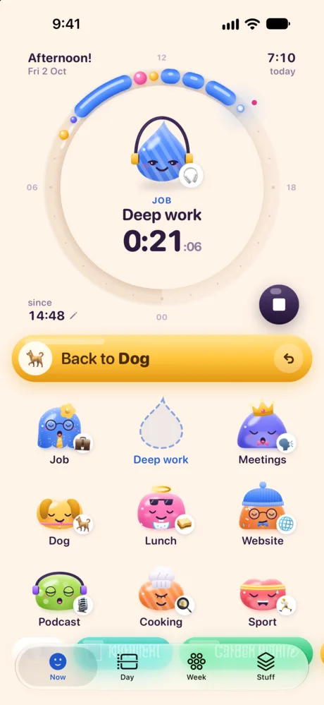
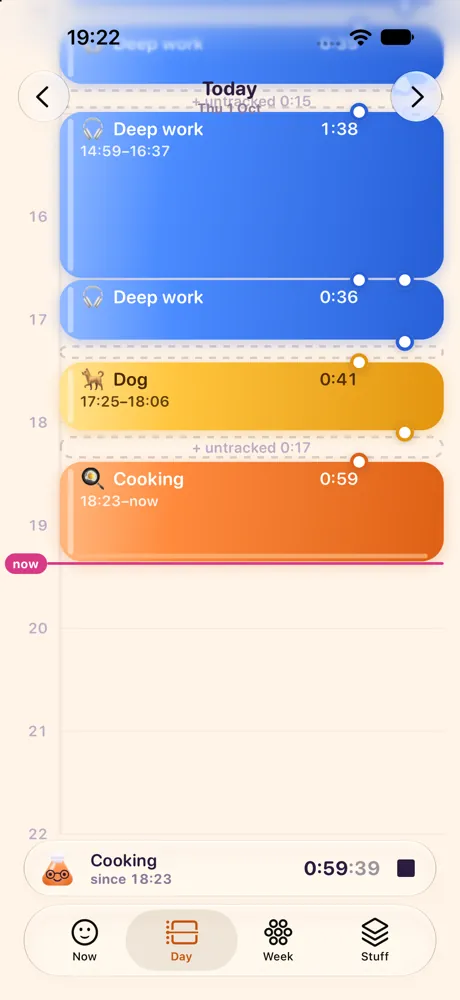
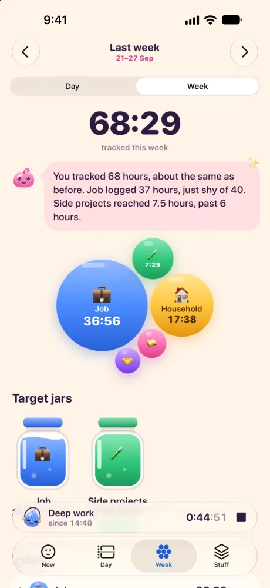
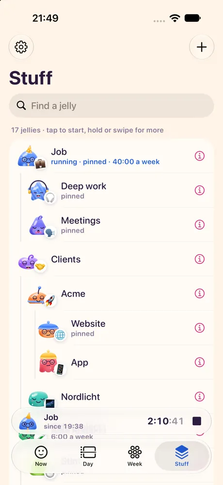

Tap a jelly. Watch it hop.
Hopwatch is a time tracker where everything your time goes to is a jelly with a face: the job, a client, the dog. Tap one and it hops into today's dial and starts counting. Tap another to switch. That's most of it.
Go on, tap one.
Now, Day, Week, Stuff
Four tabs. Most days you only need the first one.
-

NowThe running jelly sits in the dial. Tap another to switch, or hop back to the one before. 
DayEvery entry is a jelly bean. Drag an edge to fix a time, tap a gap to fill it. 
WeekTotals as bubbles, targets as jars that fill up. 
StuffAll your jellies. Group them, pin the ones you use most, archive the rest.
What else it does
Every feature gets a jelly. Go ahead and tap them.
-
One tap to switch
Starting something stops the last thing, so there's no timer to babysit. Tapped the wrong one? Undo. Forgot to stop? Hopwatch nudges you, and you can stop at the time you actually did.
-
Your day on a dial
Today is a 24-hour candy dial with noon at the top and midnight at the bottom. The Day tab lines up your entries as jelly beans you can stretch and fill in.
-
Weeks and targets
The Week tab adds it all up. Give a jelly a weekly target, like 40 hours of Job or 3 of Guitar, and watch its jar fill.
-
Every jelly is someone
Jellies get their look from their name and emoji. The dog gets floppy ears, cooking a chef's hat, deep work a pair of headphones. Change any of it, or tap Surprise Me.
-
On your Lock Screen
On iPhone, the running jelly and its timer sit on the Lock Screen and in the Dynamic Island, with Stop and Back to buttons.
-
Stays on your phone
No account, no server, no ads, no tracking. Your time is stored on your phone and nowhere else, and you can export it as a file whenever you like. Privacy policy
-
Apple Intelligence, if you have it
On iPhones with Apple Intelligence, Hopwatch suggests emoji, colors and looks, writes a little summary of your week and understands entries like "2h deep work this morning". It all runs on the iPhone. Without it, everything else works the same.
-
English and German
Hopwatch speaks both and follows your phone's language.